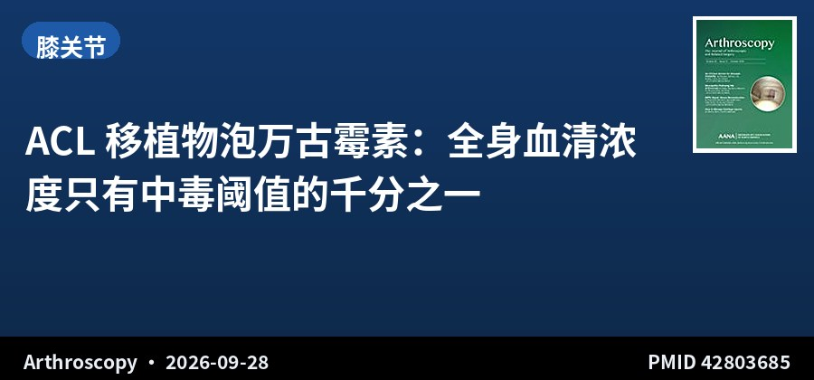

SPORTS MEDICINE & ARTHROSCOPY DIGEST
万古霉素泡 ACL 移植物，会中毒吗？21 例血清监测给答案
第 018 期 · 2026-09-29
9月28日 10 本核心期刊新收录 10 篇（剔除 1 篇编辑评论）· 本期 1 主打 + 6 精简
术中把 ACL 移植物泡进万古霉素里防感染，这招越来越普及。但总有人担心：万古霉素会不会吸收入血、引起全身毒性？这篇 21 例的血清监测说——不会，峰值连中毒阈值的千分之一都不到。
▍今日主打 · TODAY’S FOCUS

前瞻性队列 · III级证据 · 21例 · 48h血清监测 Prospective Cohort · Level III · 21 pts · 48-h serum monitoring
ACL 移植物泡万古霉素：全身血清浓度只有中毒阈值的千分之一
Peak Serum Vancomycin Levels Are Achieved Between 6 and 24 Hours After Implantation of Vancomycin-Soaked Anterior Cruciate Ligament Grafts
Arthroscopy · 2026-09-28 · 血清药代动力学研究 · PMID 42803685
一句话结论：21 例（17 男 4 女，中位 36 岁）单纯 ACL 重建或二期翻修，腘绳肌/股四头肌腱移植物万古霉素浸泡。术后 48 小时 6 次抽血监测：血清万古霉素峰值出现在 6–8 小时与 24 小时，中位均为 0.0050 μg/mL，48 小时仍可测到 0.0021 μg/mL。所有样本最高浓度仅 0.704 μg/mL，远低于中毒阈值 15–20 μg/mL。浸泡时间与最高血清浓度显著相关（r=0.497，P=.022）。
要点：2023-10 至 2024-01，术前、松止血带后 10 分钟、1h、6–8h、24h、48h 六次采血，串联质谱 + 高效液相色谱分析万古霉素浓度，Spearman 相关分析浸泡时间与浓度的关系。
对临床的启示：局部万古霉素浸泡移植物是公认的防感染策略，但「会不会全身吸收中毒」的顾虑一直存在。这篇用实测数据打消了它——即便浸泡时间越长吸收入血越多（r=0.497），最高浓度 0.704 μg/mL 也只有中毒阈值的 1/20 到 1/30。临床意义：可以放心用，但浸泡时间不宜无限延长（浓度与时间正相关），且这只针对常规剂量、肾功能正常者；肾功能不全者全身清除下降，仍需谨慎。
Conclusion: 21 patients (17 men, 4 women; median age 36) undergoing isolated ACLR or 2-stage revision with vancomycin-soaked hamstring/quadriceps grafts. Six samples over 48 h: peak serum vancomycin occurred at 6–8 h and 24 h (median 0.0050 μg/mL each), still detectable at 48 h (0.0021 μg/mL). The maximum concentration across all samples was only 0.704 μg/mL, far below the toxic threshold of 15–20 μg/mL. Soaking time correlated with maximum serum concentration (r=0.497, P=.022).
Key points: Oct 2023–Jan 2024; six samples (preop, 10 min after tourniquet release, 1 h, 6–8 h, 24 h, 48 h); vancomycin measured by tandem mass spectrometry and HPLC; Spearman correlation with soaking time.
Clinical implications: Local vancomycin soaking is an accepted infection-prevention strategy, yet systemic-absorption concerns linger. This study resolves them: even though longer soaking increases systemic levels (r=0.497), the peak of 0.704 μg/mL is only 1/20–1/30 of the toxic threshold. Practical takeaway: use it confidently, but avoid indefinite soaking (concentration correlates with time), and note this applies to standard dosing with normal renal function—renal impairment warrants caution.
原文 / Source：doi.org/10.1002/arj.70606
▍其余 6 篇 · 一屏看完
踝足
终末期踝足融合：髓内钉比钢板更可靠（尤其高危患者）
Tibiotalocalcaneal Arthrodesis: Deformity Correction in Medically Comorbid Patients
73 踝 TTC 融合，钢板组不愈合率更高、翻修率更高，髓内钉在高合并症 + 严重畸形患者中更可靠。
In 73 TTC fusions, open plating had higher nonunion and revision rates; intramedullary nailing was more reliable in high-risk patients with diabetes and severe deformity.
Foot Ankle Int · PMID 42803123 · doi.org/10.1177/10711007261484160
髋关节
髋关节镜：interportal 与 T 型关节囊切开，结局相当
Comparable Survivorship and Clinically Significant Outcome Achievement With Both Interportal and T-Type Capsulotomy
52+52 倾向性评分匹配，两种切开方式的 PROs、MCID/PASS/SCB 达成率、无再手术生存率均相当。
In 52+52 propensity-matched hips, interportal and T-capsulotomy showed comparable PROs, MCID/PASS/SCB achievement and reoperation-free survival.
Am J Sports Med · PMID 42803213 · doi.org/10.1177/03635465261485697
髋关节
边界性髋发育不良：纵行关节囊切开 + 综合闭合
Hip Arthroscopy With Comprehensive Capsular Closure Following Longitudinal Outside-in Capsulotomy Showed Improved Clinical Outcome
36 例 BHD 髋关节镜，iHOT-12 45.2→79.5、VAS 3.7→1.4，iHOT-12 的 MCID 达成率 100%。
In 36 borderline-dysplasia hips, iHOT-12 improved 45.2→79.5 and VAS 3.7→1.4, with 100% MCID achievement for iHOT-12.
J ISAKOS · PMID 42805559 · doi.org/10.1016/j.jisako.2026.101226
肩关节
肩袖修复失败后中斜方肌腱转移，结局不亚于初次
Secondary Middle Trapezius Tendon Transfer After Failed Rotator Cuff Repair Achieves Outcomes Comparable to Primary Transfer
53 例（初次 39 vs 翻修后二次 14），功能、活动度、肌力改善相当，翻修后二次转移也能取得良好结局。
In 53 cases (39 primary vs 14 secondary after failed repair), functional, ROM and strength gains were comparable—secondary transfer performs well.
Arthroscopy · PMID 42803607 · doi.org/10.1002/arj.70551
运动防护
MLB 投手前臂屈肌拉伤，是 UCL 手术的前哨信号
Forearm Flexor Strain and Subsequent Ulnar Collateral Ligament Surgery Risk in Major League Baseball Pitchers
123 例前臂屈肌拉伤投手配对照，拉伤后重返的投手后续 UCL 手术风险显著升高。
In 123 covariate-matched pitchers, a nonoperative forearm flexor strain predicted significantly higher subsequent UCL surgery risk.
Am J Sports Med · PMID 42802907 · doi.org/10.1177/03635465261486103
膝关节
髌骨高度测量：哪种比值最可靠？
MRI and Radiographic Patellar Height Ratio Measurement Reliability Is Not Degraded by Skeletal Maturity or Instability
77 例、7 种髌骨高度比值信度对比：MRI 上 PTI 信度最优（0.88–0.93），PFI 患者 X 线信度更高。
Across 77 subjects and 7 indices, the patellotrochlear index was most reliable on MRI (0.88–0.93); radiographic reliability was higher in PFI patients.
Arthroscopy · PMID 42803638 · doi.org/10.1002/arj.70465
💬 一起聊聊：你术中会常规用万古霉素浸泡移植物吗？一般泡多久？评论区聊聊。
关于本栏目：每日定时检索 10 本运动医学核心期刊前一日新收录文献，每日聚焦 1 篇值得深读的 + 其余精简速览，AI 辅助生成中英双语精要。
声明：本内容由 AI 辅助整理，仅供学术交流参考，观点与数据请以原文为准，不构成诊疗建议。文献题录与摘要来源：PubMed。
— 运动医学 · 关节镜文献速览 · 第 018 期 —